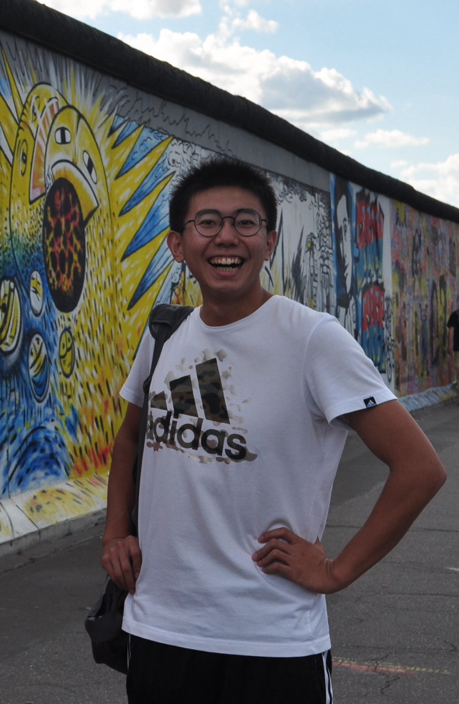

 About me My name is Duo Zhang(张多) and I am a first-year Ph.D. student and the Computer Science Department of Rutgers University. Here, I am advised by Prof. Jingjin Yu at the Algorithmic Robotics and Control Lab(ARC-L). Before this, I got my M.S. degree at the Courant Institute of Mathematical Sciences of New York University. I worked with Prof. Daniele Panozzo from the Geometry Computing Lab and Prof. Lerrel Pinto from CILVR group on Deep Reinforcement Learning, Physical Simulation and Robotics. Prior to my master's degree, I got my Bachelor degree of Engineering from the Computer Science and Technology department at Shandong University. At that time, I was working with Prof. Changhe Tu, Dr. Zherong Pan and Dr. Xifeng Gao Grasp Planning Problems. Research Interest Manipulation, Grasp Planning, Deep Reinforcement Learning, Physical Simulation